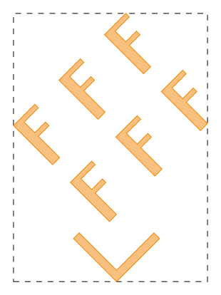
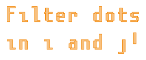
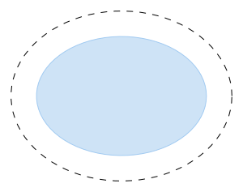

gdstk.Cell¶
-
class
gdstk.Cell(name)¶ Cell structure.
A cell is a fundamental structure in the layout. It stores the geometry, labels and references that make up the final layout. A single library can contain any number of independent cells, which can, themselves, contain references to other cells in the form of
gdstk.Reference.- Parameters
name (str) – Cell name. It must be ASCII encoded and unique within a library.
Methods
add(*elements)Add polygons, paths, labels and references to this cell.
area([by_spec])Calulate the area of this cell.
Calculate the cell bounding box.
Calculate the convex hull of the cell.
copy(name[, translation, rotation, …])Create a copy of this cell.
delete_property(name)Delete the first property of this element matching a name.
dependencies(recursive)List of cells and raw cells that are referenced by this cell.
filter(layers, types, operation[, polygons, …])Remove elements from this cell based on their layer and data/text type.
flatten([apply_repetitions])Transform all references into polygons, paths and labels.
get_property(name)Return the values of the first property of this element matching a name.
remove(*elements)Remove polygons, paths, labels and references from this cell.
set_property(name, value)Set a property for this element.
write_svg(outfile[, scaling, style, …])Export this cell to an SVG image file.
Attributes
List of cell labels.
Cell name.
List of cell paths.
List of cell polygons.
Properties of this element.
List of cell references.
-
add(*elements) → self¶ Add polygons, paths, labels and references to this cell.
-
area(by_spec=False) → float or dictionary¶ Calulate the area of this cell.
- Parameters
by_spec – If
True, return a dictionary with keys(layer, datatype).- Returns
Area of the geometry in this cell, optionally indexed by layer and data type.
Notes
This operation can be slow because all paths and references are included in the computation.
-
bounding_box() → tuple or None¶ Calculate the cell bounding box.
- Returns
The lower-left and upper-right corners of the bounding box of the cell:
((min_x, min_y), (max_x, max_y)).
Examples
>>> polygons = gdstk.text("F", 10, (0, 0)) >>> f_cell = gdstk.Cell("F_CELL") >>> f_cell.add(*polygons) >>> ang = numpy.pi / 4 >>> array_ref = gdstk.Reference(f_cell, rotation=ang) >>> array_ref.repetition = gdstk.Repetition(columns=3, rows=2, ... v1=8 * numpy.exp(1j * ang), v2=10j * numpy.exp(1j * ang)) >>> path = gdstk.FlexPath([(-5, 0), (0, -5), (5, 0)], 1, ... simple_path=True) >>> main_cell = gdstk.Cell("MAIN") >>> main_cell.add(array_ref, path) >>> bbox = main_cell.bounding_box() >>> print(bbox) ((-12.816310409006173, -5.707106781186548), (11.313708498984761, 27.66555281392367)) >>> polygon_bb = gdstk.rectangle(*bbox, datatype=1)
Notes
This operation can be slow because all paths and references are included in the computation.
-
convex_hull() → ndarray¶ Calculate the convex hull of the cell.
The convex hull is the smallest convex polygon that contains all elements of the cell.
- Returns
Vertices of the convex hull.
Examples
>>> polygons = gdstk.text("F", 10, (0, 0)) >>> f_cell = gdstk.Cell("F_CELL") >>> f_cell.add(*polygons) >>> ang = numpy.pi / 4 >>> array_ref = gdstk.Reference(f_cell, rotation=ang) >>> array_ref.repetition = gdstk.Repetition(columns=3, rows=2, ... v1=8 * numpy.exp(1j * ang), v2=10j * numpy.exp(1j * ang)) >>> path = gdstk.FlexPath([(-5, 0), (0, -5), (5, 0)], 1, ... simple_path=True) >>> main_cell = gdstk.Cell("MAIN") >>> main_cell.add(array_ref, path) >>> hull = main_cell.convex_hull() >>> polygon_hull = gdstk.Polygon(hull, datatype=1)
Notes
This operation can be slow because all paths and references are included in the computation.
-
copy(name, translation=(0, 0), rotation=0, magnification=1, x_reflection=False, deep_copy=True) → gdstk.Cell¶ Create a copy of this cell.
A transformation can be applied to the contents of the new cell. They follow the same order as reference transformations.
- Parameters
name (str) – Name of the new cell.
translation (coordinate pair or complex) – Amount to translate the cell contents.
rotation – Rotation angle (in radians).
magnification – Scaling factor.
x_reflection – If
True, the geometry is reflected across the horizontal axis before rotation.deep_copy – If
True, new elements (polygons, paths, references, and labels) are also created for the copied cell. If any transformation is applied, this value is alwaysTrue.
- Returns
Copy of this cell.
-
delete_property(name) → self¶ Delete the first property of this element matching a name.
- Parameters
name (str) – Property name.
-
dependencies(recursive) → list¶ List of cells and raw cells that are referenced by this cell.
- Parameters
recursive – If
True, includes all dependencies recursively.
-
filter(layers, types, operation, polygons=True, paths=True, labels=True) → self¶ Remove elements from this cell based on their layer and data/text type.
An element will be removed if the following check returns True:
(element.layer in layers) op (element.datatype in types)- Parameters
layers – Sequence of layers.
types – Sequence of data/text types.
operation (str) – Logical operation to be used in the filter check. One of “and”, “or”, “xor”, “nand”, “nor”, “nxor”.
polygons – Whether to filter the cell’s polygons.
paths – Whether to filter the cell’s paths.
labels – Whether to filter the cell’s labels.
Examples
>>> # Remove all elements in layer 3 and with type 10: >>> cell.filter([3], [10], "and") >>> # Remove all elements except for those on layer 5: >>> cell.filter([5], [], "nor")
-
flatten(apply_repetitions=True) → self¶ Transform all references into polygons, paths and labels.
- Parameters
apply_repetitions – Define whether repetitions should be flattened for polygons, paths and labels (reference repetitions are always applied).
Examples
>>> poly1 = gdstk.Polygon([(0, 0), (1, 0), (0.5, 1)]) >>> cell1 = gdstk.Cell('CELL_1') >>> cell1.add(poly1) >>> poly2 = gdstk.Polygon([(1, 0), (1.5, 1), (0.5, 1)], layer=1) >>> ref = gdstk.Reference(cell1) >>> ref.repetition = gdstk.Repetition(columns=2, rows=2, ... spacing=(1, 1)) >>> cell2 = gdstk.Cell('CELL_2') >>> cell2.add(poly2, ref) >>> print(len(cell2.polygons), len(cell2.references), ... len(cell2.dependencies(True))) 1 1 1 >>> cell2.flatten() >>> print(len(cell2.polygons), len(cell2.references), ... len(cell2.dependencies(True))) 5 0 0
-
get_property(name) → list¶ Return the values of the first property of this element matching a name.
- Parameters
name (str) – Property name.
- Returns
List of property values. If no property is found,
Noneis returned.- Return type
list or None
-
labels¶ List of cell labels.
Notes
This attribute is read-only.
-
name¶ Cell name.
-
paths¶ List of cell paths.
Notes
This attribute is read-only.
-
polygons¶ List of cell polygons.
Notes
This attribute is read-only.
-
properties¶ Properties of this element.
Properties are represented as a list of lists, each containing the property name followed by its values.
-
references¶ List of cell references.
Notes
This attribute is read-only.
-
remove(*elements) → self¶ Remove polygons, paths, labels and references from this cell.
Examples
>>> polygons = gdstk.text("Filter dots\nin i and j!", 8, (0, 0)) >>> cell = gdstk.Cell("FILTERED") >>> cell.add(*polygons) >>> dots = [poly for poly in cell.polygons if poly.area() < 2] >>> cell.remove(*dots)
-
set_property(name, value) → self¶ Set a property for this element.
The property name does not have to be unique. Multiple properties can have the same name.
- Parameters
name (str) – Property name.
value (str, bytes, number, or sequence of those) – Values associated with the property.
Note
General properties are not supported by GDSII files. Use the specific methods to access GDSII properties.
-
write_svg(outfile, scaling=10, style=None, fontstyle=None, background=\"#222222\", pad=\"5%\") → self¶ Export this cell to an SVG image file. Colors and attributes must follow SVG specification.
- Parameters
outfile (str or pathlib.Path) – Name of the output file.
scaling – Scaling factor for the whole geometry.
style (dict) – SVG attributes for each layer and data type. See the example below.
fontstyle (dict) – SVG attributes for each layer and text type.
background (str) – Image background color.
pad (number, str) – Viewport margin around the image content. It can be specified as an absolute dimension or a percentage of the largest image dimension.
Examples
>>> # (layer, datatype) = (0, 1) >>> poly1 = gdstk.ellipse((0, 0), (13, 10), datatype=1) >>> # (layer, datatype) = (1, 0) >>> poly2 = gdstk.ellipse((0, 0), (10, 7), layer=1) >>> cell = gdstk.Cell("SVG") >>> cell.add(poly1, poly2) >>> cell.write_svg("example.svg", ... background="none", ... style={(0, 1): {"fill": "none", ... "stroke": "black", ... "stroke-dasharray": "8,8"}}, ... pad="5%")